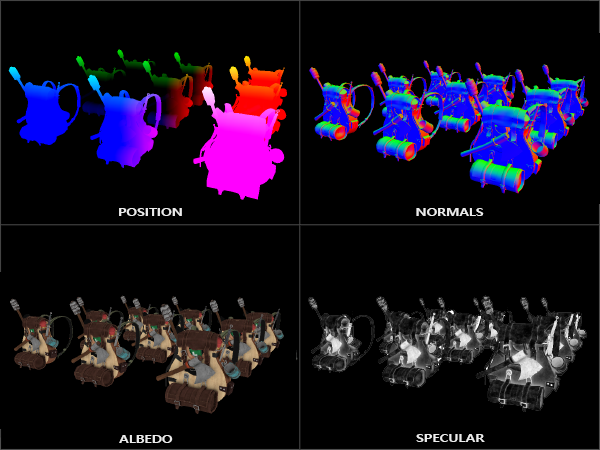
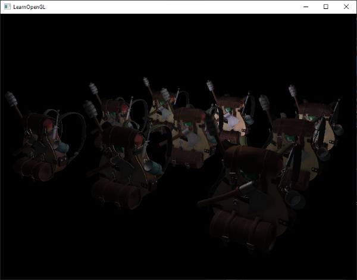
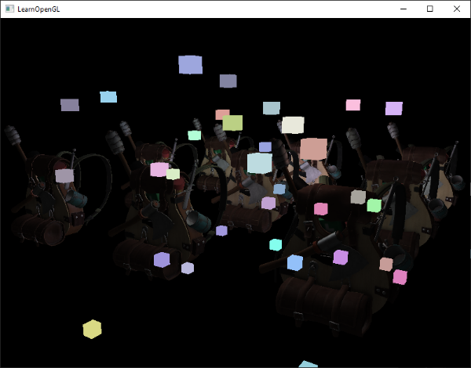
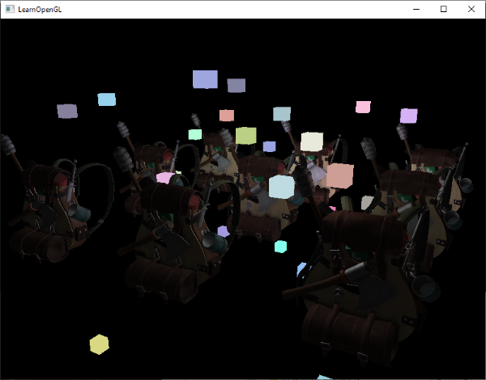

1. 基本概念
正向渲染下，是否丢弃某片元的操作是在各种测试之后，如果在frag阶段做大量算法（如光照计算），而后进行的测试将该片元舍弃，等于做了无用功。当光照数量可观时，严重消耗了算力。
而延迟渲染下，先渲染场景一次，记录有效的 位置向量(Position Vector)、颜色向量(Color Vector)、法向量(Normal Vector)和/或镜面值(Specular Value)，这时候的片段信息都是作为最顶层的片段，保证了对于在光照处理阶段中处理的每一个像素都只处理一次，再使用G缓冲中的几何数据对每一个片段计算场景的光照。

2. 缺点
缺点：不能渲染透明物体 gbuffer需要大量带宽
3. 实现
方法：
- 多pass,一个gbuffer pass生成gbuffer,一个pass处理光照计算，中间使用semaphores同步，需要submit两次
- subpass,使用一个pass内嵌两个subpass
实现：
G缓冲(G-buffer)是对所有用来储存光照相关的数据，并在最后的光照处理阶段中使用的所有纹理的总称。趁此机会，让我们顺便复习一下在正向渲染中照亮一个片段所需要的所有数据：
一个3D位置向量来计算(插值)片段位置变量供lightDir和viewDir使用
一个RGB漫反射颜色向量，也就是反照率(Albedo)
一个3D法向量来判断平面的斜率
一个镜面强度(Specular Intensity)浮点值
所有光源的位置和颜色向量
玩家或者观察者的位置向量
有了这些(逐片段)变量的处置权，我们就能够计算我们很熟悉的(布林-)冯氏光照(Blinn-Phong Lighting)了。光源的位置，颜色，和玩家的观察位置可以通过uniform变量来设置，但是其它变量对于每个对象的片段都是不同的。如果我们能以某种方式传输完全相同的数据到最终的延迟光照处理阶段中，我们就能计算与之前相同的光照效果了，尽管我们只是在渲染一个2D方形的片段。
OpenGL并没有限制我们能在纹理中能存储的东西，所以现在你应该清楚在一个或多个屏幕大小的纹理中储存所有逐片段数据并在之后光照处理阶段中使用的可行性了。因为G缓冲纹理将会和光照处理阶段中的2D方形一样大，我们会获得和正向渲染设置完全一样的片段数据，但在光照处理阶段这里是一对一映射。
整个过程在伪代码中会是这样的：
1 | while(...) // 游戏循环 |
对于每一个片段我们需要储存的数据有：一个位置向量、一个法向量，一个颜色向量，一个镜面强度值。所以我们在几何处理阶段中需要渲染场景中所有的对象并储存这些数据分量到G缓冲中。我们可以再次使用多渲染目标(Multiple Render Targets)来在一个渲染处理之内渲染多个颜色缓冲，在之前的泛光教程中我们也简单地提及了它。
对于几何渲染处理阶段，我们首先需要初始化一个帧缓冲对象，我们很直观的称它为gBuffer，它包含了多个颜色缓冲和一个单独的深度渲染缓冲对象(Depth Renderbuffer Object)。对于位置和法向量的纹理，我们希望使用高精度的纹理(每分量16或32位的浮点数)，而对于反照率和镜面值，使用默认的纹理(每分量8位浮点数)就够了。
1 | GLuint gBuffer; |
由于我们使用了多渲染目标，我们需要显式告诉OpenGL我们需要使用glDrawBuffers渲染的是和GBuffer关联的哪个颜色缓冲。同样需要注意的是，我们使用RGB纹理来储存位置和法线的数据，因为每个对象只有三个分量；但是我们将颜色和镜面强度数据合并到一起，存储到一个单独的RGBA纹理里面，这样我们就不需要声明一个额外的颜色缓冲纹理了。随着你的延迟渲染管线变得越来越复杂，需要更多的数据的时候，你就会很快发现新的方式来组合数据到一个单独的纹理当中。
接下来我们需要渲染它们到G缓冲中。假设每个对象都有漫反射，一个法线和一个镜面强度纹理，我们会想使用一些像下面这个片段着色器的东西来渲染它们到G缓冲中去。
1 |
|
因为我们使用了多渲染目标，这个布局指示符(Layout Specifier)告诉了OpenGL我们需要渲染到当前的活跃帧缓冲中的哪一个颜色缓冲。注意我们并没有储存镜面强度到一个单独的颜色缓冲纹理中，因为我们可以储存它单独的浮点值到其它颜色缓冲纹理的alpha分量中。
如果我们现在想要渲染一大堆纳米装战士对象到gBuffer帧缓冲中，并通过一个一个分别投影它的颜色缓冲到铺屏四边形中尝试将他们显示出来，我们会看到向下面这样的东西：
尝试想象世界空间位置和法向量都是正确的。比如说，指向右侧的法向量将会被更多地对齐到红色上，从场景原点指向右侧的位置矢量也同样是这样。一旦你对G缓冲中的内容满意了，我们就该进入到下一步：光照处理阶段了。
##延迟光照处理阶段
现在我们已经有了一大堆的片段数据储存在G缓冲中供我们处置，我们可以选择通过一个像素一个像素地遍历各个G缓冲纹理，并将储存在它们里面的内容作为光照算法的输入，来完全计算场景最终的光照颜色。由于所有的G缓冲纹理都代表的是最终变换的片段值，我们只需要对每一个像素执行一次昂贵的光照运算就行了。这使得延迟光照非常高效，特别是在需要调用大量重型片段着色器的复杂场景中。
对于这个光照处理阶段，我们将会渲染一个2D全屏的方形(有一点像后期处理效果)并且在每个像素上运行一个昂贵的光照片段着色器。
1 | glClear(GL_COLOR_BUFFER_BIT | GL_DEPTH_BUFFER_BIT); |
我们在渲染之前绑定了G缓冲中所有相关的纹理，并且发送光照相关的uniform变量到着色器中。
光照处理阶段的片段着色器和我们之前一直在用的光照教程着色器是非常相似的，除了我们添加了一个新的方法，从而使我们能够获取光照的输入变量，当然这些变量我们会从G缓冲中直接采样。
1 |
|
光照处理阶段着色器接受三个uniform纹理，代表G缓冲，它们包含了我们在几何处理阶段储存的所有数据。如果我们现在再使用当前片段的纹理坐标采样这些数据，我们将会获得和之前完全一样的片段值，这就像我们在直接渲染几何体。在片段着色器的一开始，我们通过一个简单的纹理查找从G缓冲纹理中获取了光照相关的变量。注意我们从gAlbedoSpec纹理中同时获取了Albedo颜色和Spqcular强度。
因为我们现在已经有了必要的逐片段变量(和相关的uniform变量)来计算布林-冯氏光照(Blinn-Phong Lighting)，我们不需要对光照代码做任何修改了。我们在延迟着色法中唯一需要改的就是获取光照输入变量的方法。
运行一个包含32个小光源的简单Demo会是像这样子的：

你可以在以下位置找到Demo的完整源代码，和几何渲染阶段的顶点和片段着色器，还有光照渲染阶段的顶点和片段着色器。
延迟着色法的其中一个缺点就是它不能进行混合(Blending)，因为G缓冲中所有的数据都是从一个单独的片段中来的，而混合需要对多个片段的组合进行操作。延迟着色法另外一个缺点就是它迫使你对大部分场景的光照使用相同的光照算法，你可以通过包含更多关于材质的数据到G缓冲中来减轻这一缺点。
为了克服这些缺点(特别是混合)，我们通常分割我们的渲染器为两个部分：一个是延迟渲染的部分，另一个是专门为了混合或者其他不适合延迟渲染管线的着色器效果而设计的的正向渲染的部分。为了展示这是如何工作的，我们将会使用正向渲染器渲染光源为一个小立方体，因为光照立方体会需要一个特殊的着色器(会输出一个光照颜色)。
##结合延迟渲染与正向渲染
现在我们想要渲染每一个光源为一个3D立方体，并放置在光源的位置上随着延迟渲染器一起发出光源的颜色。很明显，我们需要做的第一件事就是在延迟渲染方形之上正向渲染所有的光源，它会在延迟渲染管线的最后进行。所以我们只需要像正常情况下渲染立方体，只是会在我们完成延迟渲染操作之后进行。代码会像这样：
1 | // 延迟渲染光照渲染阶段 |
然而，这些渲染出来的立方体并没有考虑到我们储存的延迟渲染器的几何深度(Depth)信息，并且结果是它被渲染在之前渲染过的物体之上，这并不是我们想要的结果。

我们需要做的就是首先复制出在几何渲染阶段中储存的深度信息，并输出到默认的帧缓冲的深度缓冲，然后我们才渲染光立方体。这样之后只有当它在之前渲染过的几何体上方的时候，光立方体的片段才会被渲染出来。我们可以使用glBlitFramebuffer复制一个帧缓冲的内容到另一个帧缓冲中，这个函数我们也在抗锯齿的教程中使用过，用来还原多重采样的帧缓冲。glBlitFramebuffer这个函数允许我们复制一个用户定义的帧缓冲区域到另一个用户定义的帧缓冲区域。
我们储存所有延迟渲染阶段中所有物体的深度信息在gBuffer这个FBO中。如果我们仅仅是简单复制它的深度缓冲内容到默认帧缓冲的深度缓冲中，那么光立方体就会像是场景中所有的几何体都是正向渲染出来的一样渲染出来。就像在抗锯齿教程中介绍的那样，我们需要指定一个帧缓冲为读帧缓冲(Read Framebuffer)，并且类似地指定一个帧缓冲为写帧缓冲(Write Framebuffer)：
1 | glBindFramebuffer(GL_READ_FRAMEBUFFER, gBuffer); |
在这里我们复制整个读帧缓冲的深度缓冲信息到默认帧缓冲的深度缓冲，对于颜色缓冲和模板缓冲我们也可以这样处理。现在如果我们接下来再渲染光立方体，场景里的几何体将会看起来很真实了，而不只是简单地粘贴立方体到2D方形之上：

有了这种方法，我们就能够轻易地结合延迟着色法和正向着色法了。这真是太棒了，我们现在可以应用混合或者渲染需要特殊着色器效果的物体了，这在延迟渲染中是不可能做到的。
更多的光源
延迟渲染一直被称赞的原因就是它能够渲染大量的光源而不消耗大量的性能。然而，延迟渲染它本身并不能支持非常大量的光源，因为我们仍然必须要对场景中每一个光源计算每一个片段的光照分量。真正让大量光源成为可能的是我们能够对延迟渲染管线引用的一个非常棒的优化：光体积(Light Volumes)
通常情况下，当我们渲染一个复杂光照场景下的片段着色器时，我们会计算场景中每一个光源的贡献，不管它们离这个片段有多远。很大一部分的光源根本就不会到达这个片段，所以为什么我们还要浪费这么多光照运算呢？
隐藏在光体积背后的想法就是计算光源的半径，或是体积，也就是光能够到达片段的范围。由于大部分光源都使用了某种形式的衰减(Attenuation)，我们可以用它来计算光源能够到达的最大路程，或者说是半径。我们接下来只需要对那些在一个或多个光体积内的片段进行繁重的光照运算就行了。这可以给我们省下来很可观的计算量，因为我们现在只在需要的情况下计算光照。
这个方法的难点基本就是找出一个光源光体积的大小，或者是半径。
计算一个光源的体积或半径
为了获取一个光源的体积半径，我们需要解一个对于一个我们认为是黑暗(Dark)的亮度(Brightness)的衰减方程，它可以是0.0，或者是更亮一点的但仍被认为黑暗的值，像是0.03。为了展示我们如何计算光源的体积半径，我们将会使用一个在投光物这节中引入的一个更加复杂，但非常灵活的衰减方程：
Flight=IKc+Kl∗d+Kq
我们现在想要在Flight
等于0的前提下解这个方程，也就是说光在该距离完全是黑暗的。然而这个方程永远不会真正等于0.0，所以它没有解。所以，我们不会求表达式等于0.0时候的解，相反我们会求当亮度值靠近于0.0的解，这时候它还是能被看做是黑暗的。在这个教程的演示场景中，我们选择5/256
作为一个合适的光照值；除以256是因为默认的8-bit帧缓冲可以每个分量显示这么多强度值(Intensity)。